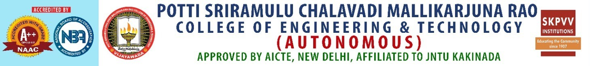

International Conference on
Data Science and Computational Business Information Systems (ICDSCI) 2025
March 20-21, 2025
Hybrid Mode
Conference Proceedings
ALL ACCEPTED & PRESENTED papers will be published in SCOPUS indexed SPRINGER.
Submission is now open: Till December 15, 2024.
ABOUT PSCMR
Potti Sriramulu Chalavadi Mallikarjuna Rao College of Engineering and Technology (PSCMRCET) was started in the year 2008, under the aegis of, more than hundred years old, Sri Kanyaka Parameswari Vissamsetti Venkataratnam Hindu High Schools Committee (SKPVVHHSC – Established in 1906), by a group of philanthropists belonging to Vijayawada. PSCMR College of Engineering and Technology offers B. Tech, MBA, M Tech, and MCA programmes. PSCMRCET aims to impart quality education supported by societal responsiveness fostering holistic development of its students.
The mission of the college is to impart quality and value-based technology and management education relevant to contemporary corporate and societal needs through continuous learning, societal responsiveness supported by strategic partnerships with industry and academia. At PSCMRCET, education revolves around providing a multidimensional development programme to its students, ameliorating their interpersonal skills and corporate etiquette, thereby resulting in accelerated professional growth.
The college aspires to promote leadership through societal responsiveness and excellence in technology and management education. With a Governing Body consisting of Three Former Vice Chancellors and representatives from I.T. and Core industries – The TCS, Infosys, H-Bots, Eurth Techtronics, Galaxe Solutions Inc., Efftronics, Govt. Water Resource Dept., Athena power, Price Water, Sesha Sai Knittings, Minerva Group of Hotels – PSCMRCET continues to be rated as one of the leading technical colleges in the capital region of Andhra Pradesh.
The academic programmes that are offered in both Engineering and Management are highly regarded. The institute is known for imparting high-quality professional education and training in an atmosphere of discipline. All the stakeholders work towards fulfilling this mission, shaping our students into people who can play an effective role in the development of a knowledge society.
The college has been committed to the vision of making a significant contribution to a highly advanced technological society with profound human values by sending forth students as people of unparalleled expertise and a high sense of ethical values. Beyond curriculum topics on niche technologies are being taken care of by inviting established expert resource persons from industry and academia.
A.P. State Skill Development Council has conducted more than 151 such training programs in the last three years. The college is committed to providing internships to all the students, evident from the fact that the college received an award from the AICTE for the maximum number of internships in the southern region through Internshala.
With an ardent commitment to helping students become perfect wholesome personalities, the College envisages a campus that promotes healthy interaction between faculty and students and among the students. We have a well-structured student counseling system to meet the noble objective of team spirit and cooperative learning.
Extra and co-curricular activities are sincerely encouraged through different on-campus clubs and committees. There is a PSCMR Toastmasters club, Chess Club, Roteract club, Music Club in addition to the student chapters of esteemed professional bodies like the Institution of Engineers, Computer Society of India, Institution of Electronics and Telecommunication Engineers.
Participation of students in Project expos, Hackathons, Research paper Submission, sports, and games at inter and intra-college levels is highly appreciated and encouraged. Students are reimbursed with travel expenses and registration fees. All the activities on the campus are meticulously planned and executed by only the students under the mentorship of the experienced faculty. Teaching staff are sponsored to FDPs and Seminars, and non-teaching staff too are sent to attend skill up-gradation programs with financial aid.
PSCMR College of Engineering and Technology has become synonymous with ultra-modern learning and the best placements. In a short span of time, the college has emerged as one of the prestigious educational institutions in this locality. Students from all parts of the state are ambitious to see themselves in this institution. The fact that more than 67% of our students are girls is a testimony to the faith and trust of the parents in the institution’s strict and no-compromise attitude in discipline matters.
ABOUT Data Science
With the advent of IoT (Internet of Things) and Industry 4.0, the volume of data is growing at an exponential rate. Given the massive amount of data that is produced, it has led to the matured discipline of Data Science that involves collection, visualization, processing, and modeling of large and complex data sets from different domains and sources.
Data science is an essential part of many industries today, and its popularity has grown over the years. Companies have started implementing data science techniques to grow their business and increase customer satisfaction. Its immense popularity has increased the demanding interest among students to choose it as a career option.
Data Science is an emerging area of Computer Science and Engineering (CSE). The Department of CSE-Data Science was established in the year 2022 with an annual intake of 60 students. The P.G program in Data science was established in the year 2022 with an annual intake of 18 students.
BTech CSE (Data Science) is a 4-year undergraduate level course designed for you to build a distinctive career in analytical and leadership roles in various sectors. The course is new and trending, with a perfect blend of machine learning, big data analytics, and statistics, helping students gain experience in solving problems with real-world data.
This course also gives importance to areas like big data analytics, fuzzy technologies, and artificial neural networks. It helps students in getting ready with skills to perform decisions that are based on data analysis. Throughout the duration of the programme, the students are taught how to amalgamate business knowledge, tools, and statistics to generate business value in creative ways.
Career Prospective for Data Science Students:
Data Analyst
Data Specialist
Data Scientist
Data Engineer
Data Architect
Data Consultant
Top 10 Data Science Companies:
Accenture
Databricks
OpenText
Splunk
Unified
Teradata
Oracle
Sisense
NVIDIA
Sumo Logic
Highlights:
Campus Recruitment by ORACLE and other reputed companies.
Well Equipped Computer Labs with Latest Technologies.
MOU With IIT-Bombay for Spoken Tutorial: To Impart Training on Open Source Technologies for all Engineering Streams.
The department encourages Entrepreneur Skill Development among students in Collaboration with ESDA-New Delhi.
Internships with Internshala.com.
Association with International Professional Bodies: IEEE, CSI, CII, ACM, ISTE, IETE, IAENG, IASA & IEI.
Soft Skills & CRT (Campus Recruitment Training) Programs from IInd Year B.Tech Onwards.
Training Students & Faculty on Latest Technologies by Workshops & Seminars from Industry People and IIT Faculty.
Industrial Visits to students to introduce forthcoming Technologies.
Strong ALUMNI Network of PAW [PSCMRCET-Alumni Wing].
ABOUT MCA
Master of Computer Applications (MCA) is a two-year professional post-graduate course for candidates wanting to delve deeper into the world of Computer Application development with the help of learning modern programming languages. The programme is a blend of both theoretical and practical knowledge, providing in-depth knowledge of the various computer languages and IT applications.
The Department has excellent learning facilities which include a Seminar Hall, Department Library, and a dedicated Computer Lab. Faculty members are given various opportunities to attend workshops, short-term courses, seminars, and conferences for updating knowledge, to cope with the continuous changes and challenges in the field of Computer Science and its applications.
Why MCA in PSCMRCET?
Hands-on Curriculum designed by experts from academia and industry, taught by Quality Faculty Members.
More emphasis on the latest programming languages and tools to develop better and faster applications.
Enhancing students’ capabilities as per the career requirements and providing necessary placement assistance.
Specially organized Workshops, Webinars, and Guest Lectures by Industry experts to provide the latest Industry insights.
Professional enhancement Program focusing on aptitude, reasoning, soft skills, and interviewing skills of the student.